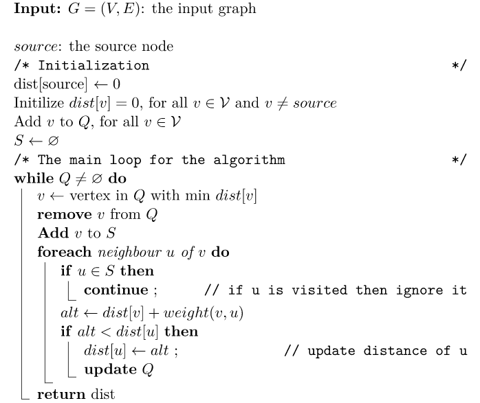

The following pseudocode shows the details of Dijkstra’s algorithm:

Time Complexity
Analysis
There are multiple ways we can implement this algorithm. Each way utilizes different data structures to store the graph, as well as the priority queue. Thus,
the differences between these implementations leads to different time complexities.
Case I:
The given graph G=(V, E) is represented as an adjacency matrix. Here w[u, v] stores the weight of edge (u, v).
Let |E| and |V| be the number of edges and vertices in the graph, respectively. Then the time complexity is calculated:
Adding all |V| vertices to Q takes O(|V|) time.
Removing the node with minimal dist takes O(|V|) time, and we only need O(1) to recalculate dist[u] and update Q. Since we use an adjacency matrix here, we’ll need to loop for |V| vertices to update the dist array.
The time taken for each iteration of the loop is O(|V|), as one vertex is deleted from Q per loop.
Thus, total time complexity becomes O(|V|) + O(|V|) x O(|V|) =
O(|V|^2).
Case II:
This case is valid when:
The given graph G=(V, E) is represented as an adjacency list.
The priority queue Q is represented as a binary heap or a Fibonacci heap.
time complexity using a binary heap
It takes O(|V|) time to construct the initial priority queue of |V| vertices.
With adjacency list representation, all vertices of the graph can be traversed using BFS. Therefore, iterating over all vertices’ neighbors and updating their dist values over the course of a run of the algorithm takes O(|E|) time.
The time taken for each iteration of the loop is O(|V|), as one vertex is removed from Q per loop.
The binary heap data structure allows us to extract-min (remove the node with minimal dist) and update an element (recalculate dist[u]) in O(log|V|) time.
Therefore, the time complexity becomes O(|V|) + O(|E| x log|V|) + O(|V| x log|V|), which is O((|E|+|V|) X log|V|) =
O(|E| x log|V|)since |E| >= |V| - 1 as G is a connected graph.